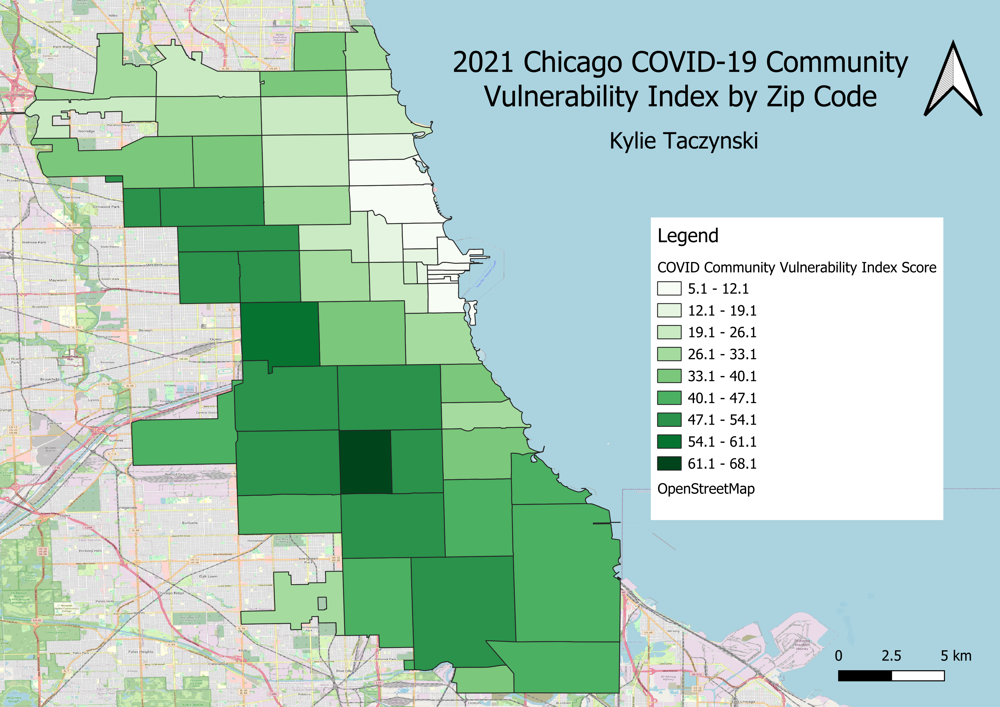

Homework 7
Explanation
The Chicago COVID-19 Vulnerability Index, or CCVI, pinpoints which areas were hit hardest by the pandemic and are at risk of barriers to COVID-19 vaccine uptake. Vulnerability, in this context, refers to a mix of factors like people's backgrounds, the spread of the virus in their area, the jobs they hold, and how much COVID-19 has affected their community. The map below represents the distribution of CCVI scores within each zip code of the city of Chicago. I chose this dataset because I was interested in learning more about how professionals assessed the impact of COVID-19 within communities. I was specifically interested in seeing the distribution of this index in an area I am familiar with.
Chicago, IL COVID-19 Community Vulnerability Index Map

Full CSV dataset
Clean CSV
Link to geoJSON